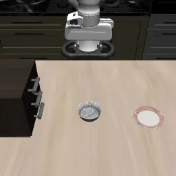
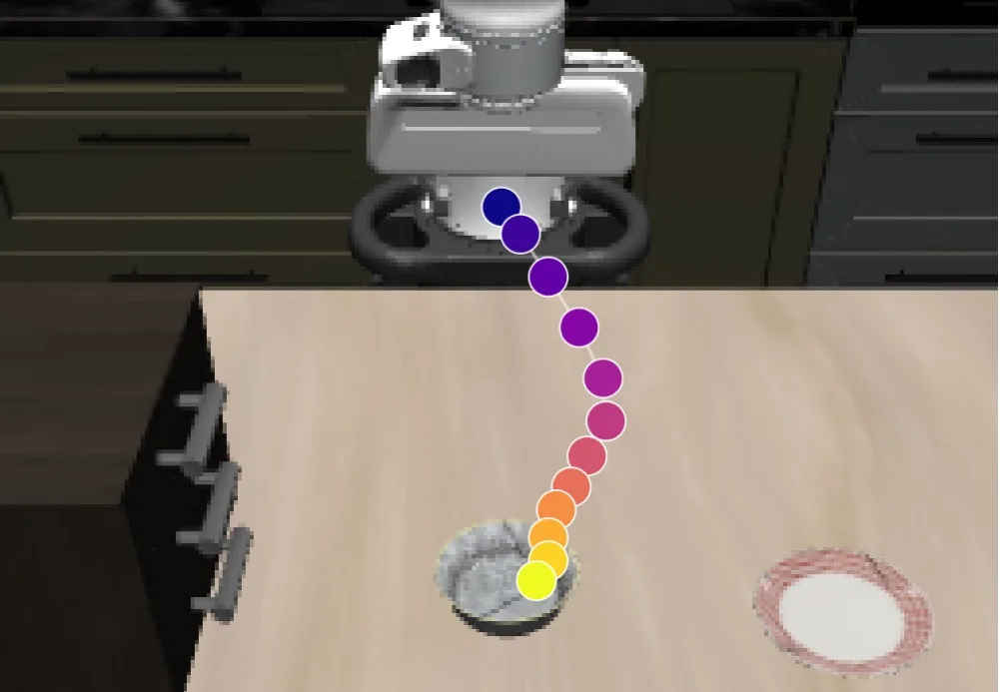
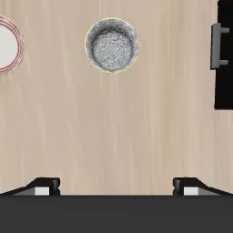
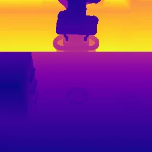
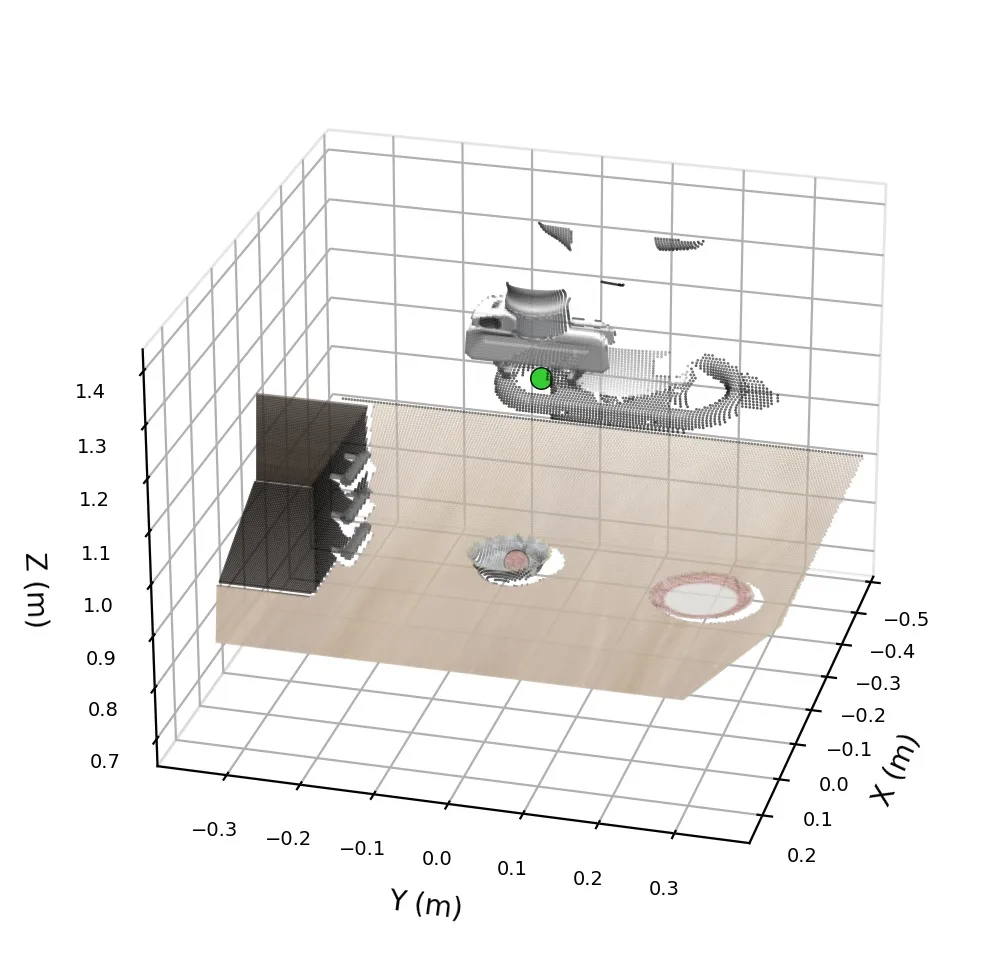

向动作头直接注入有根 3D 点以提升空间与任务泛化Direct Action-Head Injection of A Grounded 3D Point Unlocks Spatial and Task Generalization
与机器人 3D 空间 grounding、视觉定位到动作闭环有关；不是 SLAM/GNSS，但对地图/感知输出如何进入策略有启发。
一句话工作总结
用显式 3D 几何 grounding 改善机器人策略泛化，说明 VLA 控制仍强依赖稳定空间坐标表达。
摘要
视觉-语言-动作模型在测试时常因物体位置变化或指令变化而失效。作者认为关键不只是提供 2D/视觉/语言提示，而是如何表示并注入 grounding 信号：将目标提升为 3D 点，计算其相对夹爪位移，再通过自适应层归一化直接注入动作头。该模块仅为两层 MLP，不修改 VLA 主干或预训练流程。在 LIBERO-PRO 上，该方法显著提升 GR00T-N1.6 和 π0.5 在任务扰动、位置扰动下的成功率。
Vision-Language-Action (VLA) models leverage large-scale vision-language pretraining for flexible robot manipulation, yet at test time they remain brittle along two axes: spatial generalization, when object positions differ from those seen during training, and task generalization, when a familiar scene is paired with a different language instruction than the one seen in training. A growing family of methods addresses this brittleness by endowing a policy with the spatial and task-aware information such as 2D pixel-coordinate for object localization and placement. However, we find that existing representation through language prompting or visual prompting does not address the limitations; in contrast, exploiting a 3D point-based representation and feeding it directly to the action head leads to substantial improvements-revealing that how the grounding signal is represented and injected into the VLA is the true game changer. Thus, we propose a lightweight, model-agnostic module that represents the grounding signal in 3D, computes its relative displacement to the gripper, and injects the resulting spatial embedding directly into the action head through adaptive layer normalization. The entire module is a two-layer MLP that requires no changes to the VLA backbone or pretraining pipeline. On LIBERO-PRO, our method improves the average success rate of GR00T-N1.6 from 31.2 to 77.5 points under task perturbation and from 28.1 to 60.2 points under position perturbation (gains of 46.3 and 32.1 points). Comparable gains are achieved for $\pi_{0.5}$ as well, demonstrating that the mechanism is backbone-agnostic. Together, these results support our central finding: given adequate grounding lifted into 3D, injecting it directly into the action head is what unlocks both spatial and task generalization in VLAs-achievable with nothing more than a lightweight module on top of a pretrained backbone.
中文解读摘录
图表/页面预览
{kind=link}


{kind=link}

{kind=link}

{kind=link}

{kind=link}
